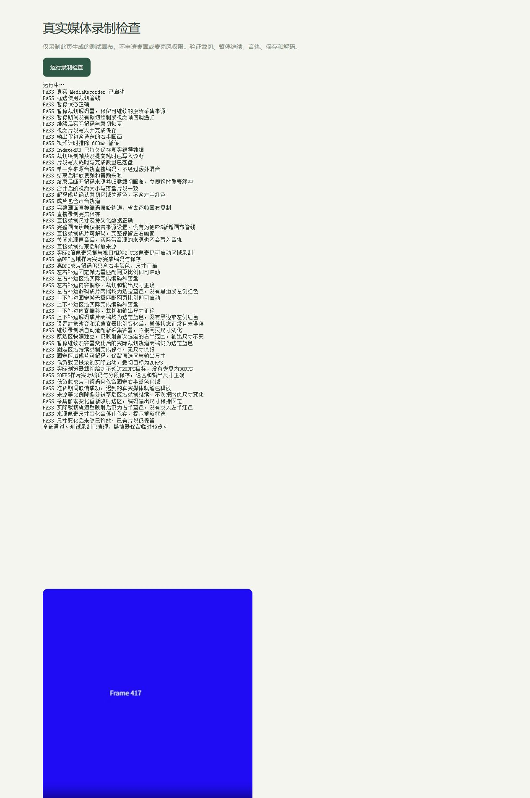
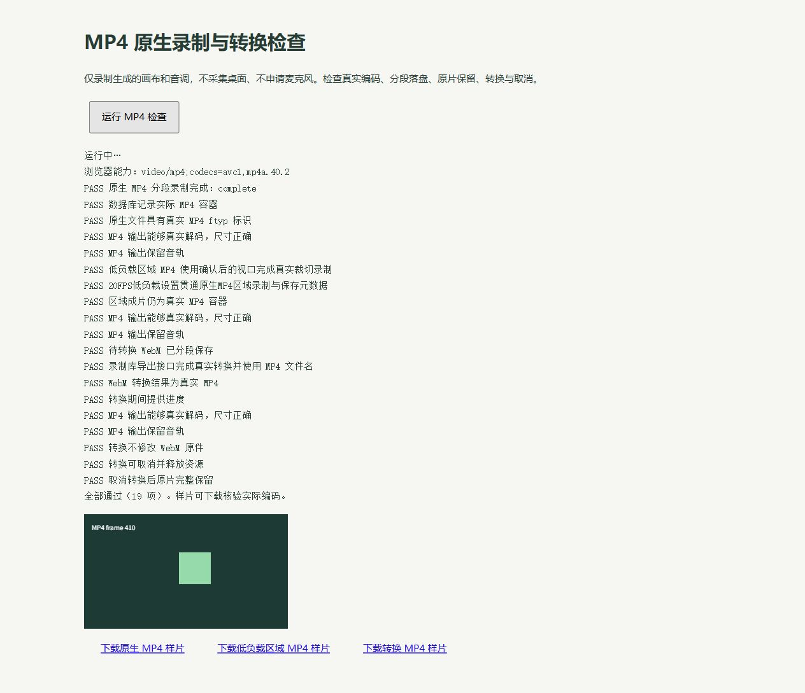

Side Panel
panel.*范围、工具、音频、素材、状态；发送控制消息，不持续编码视频。
映录是一款面向网页项目演示的 Chrome / Edge 扩展。录下真实操作，随手添加标注，在本机回看与导出。这份档案记录它的技术选择、实现过程，以及仍然需要面对的问题。
项目来自录制鹧鸪网页作品 ↗的需求：既要展示动画和交互，也要通过点击、框线、箭头和文字表达讲解。即使不标注，它也应当是完整可用的录制工具。
当前定位是网页演示优先，同时提供窗口 / 屏幕基础录制。没有账号、服务端和水印，不设置人为录制时长限制；实际能力仍受浏览器、设备与磁盘约束。
按 v0.6.9 当前代码整理。「已实现」说明有产品入口和实现；真实项目是否验收，另看证据。候选方案不计为当前功能。
适用环境：当前面向桌面 Chrome / Edge；清单最低 Chrome 116，MP4 单独检测运行时能力。网页注入与采集需要相应授权，窗口 / 系统音频依平台变化。窄屏可在表格内横向滚动阅读。
| 能力 / 状态 | 支持内容 | 使用方式与范围 | 证据与边界 |
|---|---|---|---|
| 完整网页 已实现 | 可见视口、持续动画、暂停继续。 | 开始后选完整网页；滚动后录入新画面，不一次捕获整个长网页。侧栏在标签页来源外，网页标注进入画面。 | 满足来源约束时优先直录；合成媒体 52 项，鹧鸪实录与工具排除待验收。 |
| 固定区域 已实现 | 一次框选，持续录同一视口位置。 | 暂停继续、容器像素重协商不替换选区；补边重新映射。真实 CSS 视口变化或越界要求重选。 | 不跟随 DOM；多一层逐帧裁切，卡顿仍待实测。视频实现 |
| 窗口 / 屏幕 基础支持 | 系统选择器、预览框选、暂停继续。 | 独立录制页承载，复用录制核心与本地库；保持此页打开。 | 无桌面级标注，整屏可能包含控制窗口；音乐素材面板未接入。实现 |
| 自动连接 授权后支持 | 首次授权引导、空闲切页识别、刷新兜底。 | 监听当前窗口标签事件；录制开始后锁定原来源，切页不自动更换正在录制的对象。 | 网站访问与采集授权分开；受保护页面不可注入。19 项模拟检查 |
| 实时图形 已实现 | 方框、圆圈、箭头、画笔、点击光圈。 | 鼠标选择 / 移动 / 缩放、颜色 / 线宽、撤销 / 重做 / 清空。「操作网页」恢复网页点击和拖动。 | 26 项 SVG 检查；笔迹和历史有预算，复杂场景仍需实测。 |
| 文字讲解 已实现 | 多行输入、字号、改色、双击重编辑。 | 点击网页输入，点框外完成；保留编辑框宽高和软换行。可选择后移动、缩放。 | 编辑框、选中边界、手柄也入镜；原生全屏、网页快捷键可能干扰。实现 |
| 图片素材 已实现 | PNG / JPEG / WebP 参数图、截图、预备图片收藏。 | 按张插入，移动、等比缩放；可在图上继续圈画。列表读缩略图，原图按需加载。 | 素材 10 项 / 图片 20 项；不是成片中独立可编辑轨道。 |
| 声音 / 音乐 依来源支持 | 网页声、麦克风；网页模式本地音乐收藏、试听、音量和循环。 | 单音轨直通，多路才混音；音乐区收起或隐藏释放试听。可导入 MP3 / WAV / OGG / M4A / AAC / FLAC / WebM，实际需能解码。 | 21 项音乐 / 侧栏检查；麦克风单独授权；桌面声音取决于系统与来源。 |
| 停止与恢复 已实现 | 暂停扣时、取消准备、停止兜底、同页恢复标注。 | 结束先释放采集再保存；标注收起，释放历史和图片像素，保留最终标注供恢复。 | 暂停仍保留来源，非零占用；刷新或关闭网页清空标注。录制核心 |
| 本地库 / 回看 已实现 | 分段保存、分页列表、按需文件预览。 | 录完先回看，自行下载；大文件准备临时文件后播放，支持取消、释放，与采集 / 转换协同。 | 数据库 15 项 / 文件 25 项；真实长片和设备占用待测。 |
| WebM / MP4 运行时检测 | 原片下载、直接保存、支持时 MP4 录制与转换。 | WebM 优先 VP8 / Opus；MP4 为 H.264 / AAC。WebM 转 MP4 本机重编码、可取消、保留原片。 | 19 项 MP4 检查；转换接近播放时长、可能改画质，与新采集互斥。 |
| 异常保护 已实现 | 超时、占用锁、迟到隔离、保存积压与恢复。 | 片段 / 元数据原子写入；读取中防删除；失联尝试恢复已落盘片段，不把失败显示为完整成功。 | 548 项模块测试；崩溃不保证末段完整，本地库不是外部备份。 |
| 诊断 / 隐私 已实现 | 默认关闭的性能诊断、本机手动导出。 | 记录来源尺寸、处理路径、帧提交与保存情况；无账号、上传、遥测或运行时 CDN。 | 回调不等于作品 / 成片实际 FPS，系统数据按统一步骤测量。 |
| 剪辑 / 云 / 原生 未实现 | 没有多轨剪辑、字幕编辑、云同步、桌面标注、元素跟随录制。 | 跨刷新标注草稿、轻量素材复用等仅为候选扩展。 | 保持网页演示优先，复杂编辑与云服务暂不优先。 |
实现依据：标注预算、文件预算、图片素材、音乐库。不同层的保护预算不能相加视为真实 RAM，更不代表 Chrome 进程硬上限。
捕获、处理、编码、保存是四件事。产品界面与录制底层分别承担职责。
panel.*范围、工具、音频、素材、状态；发送控制消息，不持续编码视频。
background.js权限、目标页、会话身份、采集 / 转换互斥与恢复。会休眠，媒体不依赖它常驻运行。
content.js / Shadow DOM + SVG在目标网页绘制文字、图形和图片；进入网页像素，也会增加网页的主线程 / 合成工作。
控制消息：侧栏 → 后台核对来源与会话 → 网页标注层 / 媒体承载页；承载页回报状态。录制开始后不随空闲连接逻辑切换来源。
offscreen.js消费后台 tabCapture 流 ID，以 getUserMedia 取得来源。关闭侧栏仍可录制，结束后清理离屏资源。
desktop.js执行 getDisplayMedia、来源预览 / 框选，调用共享 Recorder；关闭录制页会中断。
exporter.js / lib/mp4.js准备下载文件、解码重编码、进度与取消。与采集协调占用，保护尚未结束的原生操作。
lib/video.js整幅来源满足条件则直用；裁切 / 缩放使用视频 → Canvas 2D → captureStream，随新帧调度。
lib/recorder.js / music-player.js单音轨直接使用，多路 Web Audio 混音；MediaRecorder 编码、暂停、分段背压和终结。
lib/file-resource.js / preview.js创建、逐段写入、提交、取消与迟到清理；锁保护活跃文件，播放器与 URL 按需释放。
媒体数据：目标来源（含网页标注）→ 直录或裁切 + 按需混音 → MediaRecorder → IndexedDB 片段 → 回看 / 手动导出。视频字节不会逐帧通过侧栏或后台消息。
IndexedDB / storage.local视频元数据与片段、图片 / 音乐分库；偏好与必要任务摘要另存。卸载或清数据可能丢失。
storage.session / 页面内存协调状态、来源和占用；最终标注保留在网页，隐藏后图片留压缩恢复数据，不跨刷新。
OPFS / 文件选择器 / downloadsOPFS 用于回看和暂存，不是备份；用户主动保存到电脑的文件独立保留。
离屏运行分离了控制界面与媒体生命周期，但仍共享设备的 CPU / GPU / 内存，不自动消除采集、合成和编码成本。接口配合参照 Chrome 官方采集说明；下方四条链路对应当前实现。
chrome.tabCapture取得目标页画面与声音的流标识。
getUserMedia离屏文档消费来源，尝试约束尺寸与帧率。
MediaRecorder满足条件时直接编码来源轨道。
IndexedDB约一秒目标分段，结束后在库中回看。
减少额外的视频播放、Canvas 重绘与再次捕获。来源不满足约束时仍可能回退到 Canvas，不能把“完整网页”一概当成直录。
tabCapture + 握手采集就绪后确认选区、CSS 尺寸与可用采集画面。
drawImage先计算网页内容矩形、剔除采集补边，再映射选区；优先跟随新视频帧。
canvas.captureStream将裁切画面交给 MediaRecorder 编码。
IndexedDB保持输出尺寸，保存已有片段并提供预览。
Chrome 标签页固定帧的上下 / 左右补边会纳入坐标换算；容器尺寸改变可重新映射。真实 CSS 视口变化或选区越界仍会要求重选。Canvas 路径增加处理成本，实际影响尚需鹧鸪实机对照。
getDisplayMedia用户选择窗口或屏幕，并按需共享声音。
createVideoOutput整幅画面优先直接使用，框选时裁切。
MediaRecorder复用暂停、停止、音频与异常处理。
IndexedDB完成后自行回看、下载或转换。
当前没有桌面级标注。录整个屏幕可能包含可见控制窗口，不承诺工具条隐身；关闭独立录制页会中断录制。
IndexedDB → OPFS / Blob取得读取占用，检查片段顺序与总字节数。
HTMLVideoElement解码原视频并提供进度、取消能力。
MediaRecorder运行时检测真实 MP4 能力，保留原件。
chrome.downloads核对实际下载状态，清理临时文件。
这条路径通常接近播放时长，并可能改变画质、大小；不是瞬时无损转封装。直接选择 MP4 录制可省去这次转换，前提是运行环境支持。
Side Panel 承载鼠标操作的工具；Content Script 用 Shadow DOM / SVG 绘制图形、文字和点击光圈。后者成为网页像素进入视频，侧栏不属于标签页来源。工具排除尚待鹧鸪成片实测确认。
仅打开侧栏不启动采集；收起的素材区不打开对应数据库。暂停取消裁切调度并暂停隐藏视频，但保留来源以继续录制。数据库复用连接不等于素材常驻解码。
停止编码与采集，断开媒体 / 音频和画布；标注隐藏、释放历史，保留恢复所需数据。随后等待分段写入与终态保存，界面区分保存中、完整和部分保存。
停止继续发起后续工作，隔离过期结果。原生 I/O / 解码不能保证立即强杀；对应操作结束后才删文件、释放锁，避免误清理新会话或并行堆积。
后台核对实际媒体承载页和任务，尝试终结已落盘记录；不保证崩溃末段完整。回看 / 导出按需创建临时文件，使用结束清理所属资源，异常残留按占用保护回收。
| 模块 | 职责 | 源码 |
|---|---|---|
| 后台协调器 | 授权、目标页、会话锁、消息路由、恢复与删除保护 | background.js |
| 控制与来源 | 侧栏设置、网页连接、独立桌面录制页 | panel.js / desktop.js |
| 标注层 | 绘制、文字编辑、选择缩放、选区、点击反馈 | content.js |
| 录制引擎 | 来源准备、音轨、编码、分段写入与终结 | offscreen.js / recorder.js |
| 视频处理 | 尺寸约束、直接轨道、裁切、帧调度与诊断 | video.js |
| 本地数据 | 片段事务、分批读取、完整性核验、恢复 | db.js / recovery.js |
| 导出与转换 | 临时文件、MP4 重编码、导出队列与清理 | export.js / mp4.js / auto-export.js |
| 备选图片素材 | 本机预备、缩略图、按张插入与容量限制；独立于视频库 | materials-panel.js / image-materials.js |
| 本机音乐 | 收藏、试听、独立混音与播放生命周期；复用录制音频上下文 | music-store.js / music-player.js / music-panel.js |
| 录制库 | 预览、状态刷新、保存文件、删除与诊断展示 | library.js |
保留选择背后的原因，也记录它带来的代价。
网页作品是主要来源，扩展容易注入标注、连接目标标签页，并把控制区放在侧栏。原生 JavaScript、无需运行依赖或后端。
代价：来源权限、service worker 休眠、浏览器版本和媒体能力都需要处理。
用户希望保留现场操作的自然感。用 SVG 图形和可编辑文字完成实时标注，鼠标可切换操作网页、绘图与选择。
代价：标注已经烘焙进视频，不能在成片中独立编辑；编辑框、选中边界和手柄也可能录入。结束后隐藏，同页可恢复，刷新会清空。
整页满足尺寸与帧率条件时直接编码；裁切优先跟随视频帧，跳过重复帧，暂停时停止重绘。单音轨直接使用，多路时才混音。
代价：区域多一道 Canvas 处理；尺寸要在 CSS 像素与采集像素间一致换算。30 / 60 FPS 是目标，不代表实测成片帧率。
约一秒目标的片段写入 IndexedDB，减少仅在内存积累整片的风险。停止先释放来源，再等待保存；启动、写入、停止和清理均有异常兜底。
代价：浏览器调度不能保证每段刚好一秒；崩溃仅能恢复已落盘片段。完整预览与 Blob 兼容路径仍可能消耗较多内存。
保留分段存库，取消录完自动下载。用户主动预览、保存原片、分段写文件，或转换 MP4；旧版未真正下载的自动任务也暂停。
代价：本地库不等于外部备份。卸载或清除扩展数据可能丢失录制，需要用户主动保存重要视频。
WebM 优先 VP8 / Opus；MP4 检测 H.264 / AAC 支持。已有视频转换使用本机解码和重新编码，不上传；转换期间与采集互斥，避免同时争用编码资源。
代价：转换通常接近实时、可能改变画质。当前未使用 FFmpeg 或 WebCodecs 作为运行核心，也没有通用无损转封装。
换产品外壳不等于换采集与编码核心。以下是现状与候选方向，不是已经承诺的升级。
| 路线 / 状态 | 能带来的价值 | 限制与成本 | 对映录的判断 |
|---|---|---|---|
| 浏览器 + MediaRecorder当前实现 | 网页集成直接；扩展较轻；标注和侧栏协同方便。 | 编码控制较少，区域处理增加开销，生命周期与存储需兜底。 | 继续作为网页演示主线，先建立实机基线。 |
| 浏览器 + WebCodecs候选 · 未实现 | 更细控制帧、时间戳与编码队列；可把部分处理放到 Worker。 | 自行负责音画同步、文件封装、背压与内存；仍使用浏览器来源，不保证更快。 | 实测确认帧处理或编码控制是瓶颈后再做原型。 |
| Region / Element Capture候选 · 未验证 | 由浏览器裁切区域或限制元素，可能减少手动逐帧处理。 | 存在 self-capture 和目标元素条件；元素捕获可能排除独立标注层，不能直接替换离屏任意页采集。 | 先验证可用上下文、标注保留及尺寸行为。 |
| 系统采集 + 原生编码候选 · 未实现 | 更灵活的窗口 / 屏幕来源、GPU 处理、编码控制和大文件管理。 | 需要安装程序及各系统适配；权限、音频、显卡和崩溃恢复成本更高，仍会争用资源。 | 通用录屏、高负载和长时间录制的长期候选。 |
| Electron / Tauri 外壳形态选择 · 未实现 | 便于桌面界面、文件管理和原生模块集成。 | 仅套壳仍可能沿用浏览器媒体链路，不自动提升性能。 | 只有接入不同的录制核心，才构成底层切换。 |
| 插件 + 本机原生进程长期构想 | 插件负责网页操作与标注，本机进程负责采集、编码和文件。 | 增加安装、通信、坐标同步与两端版本管理；控制区排除和标注合成需重新设计。 | 保留现有交互成果的演进方式，暂不进入重写。 |
MediaRecorder 也可能使用硬件编码，具体取决于设备、格式和浏览器。原生采集有优化空间，但无法补回网页自身未渲染的帧或已经丢失的效果；更换路线前必须做相同条件的对照。
“实现了防护”“测试通过”“真实项目通过”是不同结论。本清单按证据区分状态。
本轮减少侧栏打开时的读取：音乐与备选图片按需载入，录完释放图片像素但保留恢复原图；录制进度和标题局部更新，素材库连接可恢复。既有分页、来源预算、历史共享与导出保护继续保留。保持操作简单，无新增依赖、权限或后台轮询；鹧鸪实机占用对照仍未完成。
| 状态 | 问题与影响 | 处理或下一步 |
|---|---|---|
| 0.6.9 已优化 | 打开侧栏即加载素材列表和选中音乐。 | 折叠时不打开对应数据库，展开才读列表，试听才读音频；收起 / 隐藏释放试听和缩略图，无新增轮询。 |
| 0.6.9 已优化 | 录完为恢复保留的图片仍占解码像素。 | 保留压缩原图、坐标和尺寸，归零画布；恢复才解码。64 MiB 像素预算与 16 MiB 压缩数据预算不是进程内存上限。 |
| 0.6.9 已修复 | 状态进度反复刷新控制区，素材 / 音乐连接恢复规则不同。 | 进度仅更新时间，标题局部更新；素材与音乐使用惰性连接管理，隔离旧回调，不重放失败写入。 |
| 0.6.8 已修复 | 数据库打开挂起后，后续操作反复等待同一个旧连接。 | 打开超时可重连，迟到连接与旧关闭事件隔离；只重试尚未创建的事务，不重放失败写入。 |
| 0.6.8 已优化 | 长笔迹重建路径，拖动 / 缩放每帧复制整个点数组。 | 增量追加 SVGPointList 与边界；拖动仅更新矩阵，松开一次提交点坐标，保持线宽、撤销与恢复。 |
| 0.6.8 已优化 | 录制库和侧栏最近录制都全取元数据再排序。 | 时间与 ID 复合索引，库每页 20 条、侧栏 3 条；追加、刷新复用卡片，保留展开范围，不持有诊断样本。 |
| 0.6.7 已修复 | 导出和转换仍有独立的无界等待，取消后可能等待底层文件操作。 | 共用文件资源管理，逐次取消 / 超时；临时文件变更结束后才删除和解锁。原生操作未结束时导出页保留清理状态，后台不提前关闭或启动下一项。 |
| 0.6.7 已优化 | 文件能力缺失时，大视频导出或转换可能再次汇总完整 Blob。 | 原片内存回退与转换兼容输出各限制 32 MiB；回看、暂存和转换先估算空间。估算并非磁盘预留，真实配额 / 写入失败保护仍必需。 |
| 0.6.7 已修复 | 旧视频回看与新录制竞争资源，直接保存没有取消入口。 | 新录制 / 转换释放旧回看，跨窗口协同，隐藏页暂停。直接保存复用取消入口；未结束的迟到写入不叠加，原片保留，用户目标文件不删除。 |
| 0.6.6 已修复 | 预览取消仅在 await 前后检查，磁盘、事务或读取占用挂起时仍可无限等待。 | 每次读写 / 创建 / 提交和租约请求有取消与等待上限；迟到资源独立清理。界面最多等约 1 秒清理；底层未结束前继续持锁，不增加整段复制的总时长限制。 |
| 0.6.6 已优化 | 压缩文件虽小，完整解码后再缩小仍可能产生大幅像素峰值。 | 文件头预检，源最多 2000 万像素、单边 10000，再请求缩到长边 1600。超时迟到位图关闭、画布归零；未结束的原生任务不叠加新导入。浏览器内部解码仍有暂存。 |
| 0.6.5 已优化 | 普通区域画质也限制整页来源：高清 1920，流畅 / 低负载 1280。首次采集即请求上限，不再按小选区反推保留 4K 整帧。 | 固定区域不变，小字细节可能减少；需要细节可选原始尺寸。Canvas 裁切仍有成本，源拒绝约束仍有回退，实际 Chrome 性能待测。 |
| 0.6.5 已优化 | 历史共享未改图形与点数组；拖动按显示帧合并，仅改笔迹样式复用 SVG 路径。单笔 4096 采样，满时简化后继续画；场景与历史分别有总点数预算。 | 最多 50 步撤销且受容量约束，淘汰最旧历史；图片像素估算上限 64 MiB。录完保留最终标注可恢复，释放历史。预算不是整个浏览器的内存上限。 |
| 0.6.5 已优化 | 超过 32 MiB 按需逐片写入 OPFS 临时文件后回看，支持取消 / 释放；不合成大 Blob。关页清理缓存，打开录制库时回收未占用残留，跨页锁保护正在使用的文件。 | 需额外磁盘且首次准备完才播放；video 仍有原生解码 / 缓冲，WebM 时长发现可能扫描文件。不是零占用或秒开；空间不足时可直接保存原片。 |
| 已修复 | 暂停区域录制只跳过重绘，仍播放隐藏视频、递归帧回调与定时兜底。 | 暂停视频并取消全部裁切调度；继续只恢复一条链，隔离旧回调与播放错误。原始来源保留，暂停仍有采集开销。 |
| 已修复 | 区域绘制逐帧读取播放统计；停止后画布像素等待回收。 | 原生回调使用 presentedFrames 判重，诊断 / 兜底才读统计；结束归零画布并断开视频，诊断保留输出尺寸。 |
| 已修复 | 桌面页空闲、暂停或隐藏时也每秒更新四次计时。 | 仅可见录制中运行一个秒级任务，其余状态及离页立即取消；状态变化即时更新。 |
| 已修复 | 试听刚开始就录制可能显示播放中断；旧音乐播放拒绝可能覆盖新的继续意图。 | 按来源 / 播放代次隔离过期结果，正常暂停与停止不再显示失败，真正错误仍保留。 |
分段写入、约 64 MiB 等待队列软阈值、停止 / 保存超时及资源释放已有实现。它们不能限制浏览器内部编码缓存或整个进程的 CPU / 内存；暂停还保留采集、麦克风与必要的声音监听，网页自身继续运行。没有新增权限、依赖、后台轮询或自动下载。
同一设备、网页场景、窗口和缩放下，每段至少 30 秒比较：无录制 → 整页 30 FPS → 普通区域 30 FPS → 低负载区域 20 FPS → 停止后恢复。覆盖侧栏工具、文字 / 图片、长笔迹和暂停继续。先关闭页面诊断做对照，再单独开启现有 baseline / recording / recovery 采样。
记录来源真实尺寸、管线、编码格式、写入等待峰值、绘制提交耗时、相关进程 CPU / 内存及系统 GPU，同时检查实时网页与回放效果。页面 RAF 是调度节拍，绘制帧数也不是成片实际 FPS，iframe 内作品需分别测量。
像素预算示例：4K / 30 FPS 约 2.49 亿像素/秒，1280 × 720 / 20 FPS 约 1843 万，相差 13.5 倍。这不是 CPU、内存或耗电的实测下降比例。查看完整审查、源码入口及验证边界 ↗
共 21 条记录
处理：音乐与备选图片按需查询，试听才读取音频，收起释放来源与缩略图。归档保留压缩图片并释放画布像素，恢复时重新绘制，不删除当前可见标注。进度与标题局部更新，素材与音乐统一连接保护。
证据：侧栏与音乐 21 项检查、图片与恢复 20 项检查、548 项自动化通过。测试夹具确认默认收起时两种素材库打开次数和音频读取次数均为 0，不等于实际 Chrome CPU / 内存基准。
未完成：Chrome 当前网址无法被工具可靠识别，自动审批停止实机操作。「仅开侧栏 / 整页 / 区域」的鹧鸪占用对照仍未完成。
处理：打开超时可重连，迟到旧连接隔离，不重放失败写入。v2 复合索引保留原记录与片段，录制库每页 20 条、侧栏只读 3 条。长笔迹追加 SVG 点，移动与缩放用临时矩阵，松开后一次提交；保留撤销和线宽。
证据：15 项真实数据库与列表界面检查、26 项真实 SVG 标注检查，均为本地浏览器回归。Chrome 操作因无法确认当前网址被自动审批拦截，鹧鸪实录及系统占用仍待验证。
处理：共用文件资源管理，限制大文件内存回退；新录制 / 转换释放旧回看，多窗口协同，直接保存支持取消和迟到写入保护。准备临时文件前估算额外空间，保留实际失败恢复。
证据：519 项自动化，25 项真实文件流程、19 项 MP4；文件流程检查 ↗。文件选择器与部分故障由测试模拟，IDB / OPFS / Web Locks / 编码真实运行。无实机 CPU / GPU 基准，不能宣称鹧鸪卡顿消失。
处理：普通画质同时限制整帧来源；历史共享未修改数据并设置容量预算，拖动合帧，结束释放历史但保留最终标注可恢复。大于 32 MiB 使用文件回看，提供取消 / 释放与跨页缓存保护。
证据：474 项自动化、52 项媒体、19 项 MP4、16 项标注、14 项图片与 14 项文件回看检查通过。文件回看检查 ↗。大尺寸合成短片验证功能，不是长时视频或系统资源基准；鹧鸪卡顿待实测。
处理：暂停裁切视频并取消回调 / 定时器，恢复只开一条链；原生帧计数替代逐帧统计查询，停止归零画布。桌面页仅在可见录制时每秒计时。试听 / 录制音乐的过期播放结果独立隔离。
证据：451 项自动化、52 项真实合成媒体、19 项 MP4、16 项音乐检查通过。查看本轮资源审查 ↗；并未证明用户设备上的卡顿已消失。
已确认缺口：连接阶段缺少超时，worker 重启可能遗留连接中；activeTab 临时授权不能自动覆盖新网页。没有当时日志，不能认定现场唯一根因。
处理：用户一次开启可选网站访问后，侧栏按自己窗口当前页自动连接；事件驱动，不扫描全部网页。同页注入合并、等待有界、旧结果隔离、失败不持续重试。空闲、暂停或隐藏停止计时，诊断默认关闭。
证据：396 项自动化、9 项真实模块与模拟浏览器接口检查通过。查看连接验证截图 ↗。实装 Chrome 仍需验收。
症状：用户继续反馈区域录制本身卡顿，选择侧栏标注工具也卡顿。尚未确认采集、裁切、编码与作品渲染的实际占用，不能认定唯一根因。
0.4.7 措施：工具切换复用 SVG 图形、文字和命中框，只更新命中状态；新增可选低负载模式，首次采集及后续约束均请求整帧长边 1280，一键设置 20 FPS。小选区允许减少细节，固定范围不变；未自动覆盖用户设置。
验证边界：369 项模块、48 项合成媒体、19 项 MP4、16 项标注及 12 项视口检查通过。这些证明功能与负载请求正确，不等于用户设备上的卡顿已消失。
下一步：同一作品、窗口、设备下比较普通与低负载区域录制，同时观察实时网页和回放，保留诊断 JSON、前后调度节拍及效果截图。作品在 iframe 内时，顶层 RAF 不能代表作品帧率。
结构判断：网页模式捕获标签页，工具在 sidePanel，标注在网页内；按该结构侧栏不属于采集源。
尚缺证据：用户 Chrome 中的授权 → tabCapture → offscreen → 标注 → 停止 → 回看 → 实际 MP4 下载尚未完成端到端复测，不能把本地合成检查当成通过。
验收：鼠标操作侧栏工具、输入文字与拖动图形，检查成片只含网页和标注；覆盖完整网页、区域、暂停与取消。
已有实现：分段写入、超时与背压、零片段失败、失联恢复、任务持久摘要、临时文件清理、读写与删除互斥。
未充分覆盖的真实环境：长时间录制、磁盘 / 配额耗尽、浏览器整体崩溃、重启后的实际下载恢复、临时文件回收和长片音画同步。模拟故障测试不能替代这些实机情形。
验收：记录持续内存和磁盘变化；异常后仅恢复确认落盘片段，原件可读，无重复下载、错误释放或跨会话污染。
原因：此前有两层遗漏：CSS 与物理像素容差不一致；Chrome 标签页固定采集帧可有补边，但代码要求整帧与网页视口等比例，稳定画面也会一直超时。
处理：0.4.2 增加稳定视口握手，0.4.4 修正 CSS 容差，0.4.5 补齐固定帧内容矩形及偏移映射。仅已知 Chrome 标签页使用居中布局契约，通用 / 桌面来源保持原有检查；真实 CSS 视口变化继续停止。
证据：回归覆盖上下 / 左右补边、色度采样对齐、容器重协商；v0.4.7 的 48 项本地合成媒体断言通过，成片边缘确认没有录入黑边或其他区域。用户 Chrome 原场景仍归 V02 实测。查看本次媒体检查 ↗
原因：持久镜像写入拒绝或挂起可能阻塞导出控制和清理；旧镜像也可能误挡后续录制。
处理：每个镜像单写入者、合并最新快照、限时等待；清理不依赖写入成功。内存任务和所属转换会话保护原件，迟到旧写入按序补最新状态。真正准备 / 提交前保存失败则明确停止。
证据：拒绝、挂起、取消、迟到写入、原件保护及录制互斥的模拟集成回归。查看日志 ↗
原因：取消新录制自动排队后，旧 queued / preparing 任务仍可能在恢复时续跑。
处理：新手动任务写入 source:'manual'；旧未真正下载任务暂停为可重试错误。已实际开始的下载保留并核对结果，不重复提交。
证据：控制器与后台恢复回归通过。当前规则仍是录完先回看，再自行选择下载。
原因：选择状态被清除，但旧拖动仍处理后续鼠标移动，读取不存在的图形。
处理：统一终止绘制、移动和缩放，释放指针捕获；目标消失时安全退出。工具切换及相关操作同步清理。
证据：新增 Node 拖动回归通过。既有浏览器 15 项检查覆盖文字与取消等操作，未单独实测新增拖动路径。
原因：列表初次打开后缺少录制状态更新，时长、状态与删除按钮可能停留在旧值。
处理：按会话与状态转换刷新，过滤重复进度消息，合并查询并丢弃迟到结果；复用卡片，焦点恢复时补查，详情播放器不重载。
证据：网页 / 桌面通知、乱序读取、重复进度与详情隔离回归通过。
原因：初始记录已创建，但 MediaRecorder.start 抛错时没有同步终结数据库状态。
处理：先释放采集，再限时补状态。无有效片段标 error，有片段保留为 interrupted；迟到片段、补丁或取消后的初始保存只作用于原记录。
证据：新增 4 项启动失败与重试隔离回归通过，生命周期测试 36 / 36 通过。
不同时录下整个长网页；滚动时录制滚动后的可见内容。标注不跟随某个 DOM 元素滚动。区域固定在视口位置，真实窗口变化后需重选，避免范围漂移。
设置页和扩展商店等不能注入。当前点击光圈监听顶层网页，iframe 内点击不触发顶层光圈；canvas / video / iframe 单独进入原生全屏时顶层标注可能不可见。刷新清空标注；允许自动网站连接后可恢复标注连接，tabCapture 录制仍可能需要本标签页的扩展调用授权。
Canvas 处理与编码会共享 CPU / GPU 等资源；MP4 支持依赖运行环境。OPFS 暂存需要额外磁盘。0.6.5 的大于 32 MiB 回看按需写临时文件，不回退大 Blob；原有导出兼容路径仍可能使用 Blob。文件准备、原生缓冲、WebM 时长扫描及 MP4 重编码仍有资源成本。视频时长没有人为上限，但并非无限资源。0.4.9 已减少空闲计时、默认诊断采样及无关导航写入；尚无实机 CPU / GPU / 内存基准，不声称零系统影响。
桌面模式没有全局标注，录整屏可能包含工具窗口，声音取决于系统与所选来源。强制结束可能丢失最后未落盘片段；卸载或清除扩展数据可删除本地库。当前没有剪辑、字幕或多标签页自动拼接。
自动连接的可选 HTTP / HTTPS 权限用于识别和标注，只在用户点击按钮时申请。Chrome tabCapture 另行检查目标标签页的扩展调用授权；未获得时仍需点击一次插件图标，网站权限不能绕过。录制期间切页继续锁定原来源。
Chrome tabCapture 官方说明 ↗。本轮没有新增系统服务或修改操作系统设置；没有真实 Chrome 端到端与资源测量证据。
没有匹配的记录。可清空搜索，或切换到“全部”。
将已有版本归纳为六个建设阶段，方便理解依赖关系；不替代逐版本记录，也不表示每个阶段都完成了实机验收。
| 阶段 / 版本 | 用户获得的能力 | 工程实现重点 | 完成依据与遗留验收 |
|---|---|---|---|
| 01 · 录制原型v0.1.x | 网页画面、框选、基础标注、暂停继续，本地录制。 | 建立 tabCapture → 媒体流 → MediaRecorder；完整画面优先直录，尺寸 / 帧率约束。 | 形成可运行原型；复杂 3D、实际帧率和长期占用不由原型验证覆盖。 |
| 02 · 操作闭环v0.2.0–0.2.2 | 开始后选择范围；网页直接输入文字、图形编辑；结束隐藏，同页恢复。 | 取消选区、来源 / 窗口绑定、启动和终态会话隔离、保存与释放分开。 | 核心交互进入产品；多窗口、关闭 / 刷新与迟到消息需要持续回归。 |
| 03 · 保存可靠性v0.3.0 | 分段持久化、强制停止、失联恢复、诊断入口。 | 写入积压、片段完整性、录制承载页生命周期与恢复协调。 | 建立异常保存基础；曾加入自动下载，后在 v0.4.3 撤回，当前以回看和手动导出为准。 |
| 04 · 格式与区域v0.4.0–0.4.8 | MP4、导出取消 / 重试；固定区域、补边映射与低负载；初步图片标注。 | 真实容器编码，原件保留、读取占用、尺寸稳定和一次选区快照；v0.4.3 起录完不自动下载。 | 编码 / 转换回归和合成区域回归；真实鹧鸪区域卡顿未关闭。 |
| 05 · 讲解素材v0.4.9–0.6.0 | 空闲切页连接、预备图片素材、本地背景音乐收藏与混音。 | 按需素材读取、独立本地存储、播放器生命周期，复用录制音频核心。 | 素材、音乐检查；桌面页音乐未接入，真实设备混音仍需短录验收。 |
| 06 · 资源与使用性v0.6.1–0.6.9 · 当前 | 首次授权指引、刷新兜底；取消 / 超时；长片文件回看；数据库重连、分页、长笔迹与闲置侧栏优化。 | 来源预算、共享历史、缩小解码、统一文件资源、迟到清理、素材惰性加载、归档像素释放。 | 当前 548 项模块测试及分版本浏览器证据；实际 CPU / GPU / 内存、长片体验和成片完整性仍待测。 |
阶段之间是能力累积；后续行为可取代历史方案。精确更新见完整版本记录，各证据的产生版本见验证索引。后面的计划按交付条件组织，不预设新版本号或发布日期。
按版本保留演进脉络；历史决策不等于当前行为。
音乐与图片折叠时不查询，试听才读音频；录完归档图片释放像素，恢复再绘制。局部状态刷新与素材连接保护。
打开超时可重连、索引分页保留历史数据；长笔迹按需追加，拖动结束才提交坐标。鹧鸪实机资源测量尚未完成。
导出与转换复用预览的文件资源管理，限制内存兼容路径；旧回看随录制 / 转换释放，直接保存可取消，空间预检与迟到清理协同。功能流程与画质选择保持简单。
为预览、文件读写和读取占用补齐取消 / 超时，迟到操作结束后清理对应文件。PNG / JPEG / WebP 先校验像素预算再请求缩小解码，限制未结束任务叠加。保持录完回看、按需下载和现有工具流程。
普通画质限制整帧采集，原始尺寸保留细节优先选择。标注历史共享未改数据并限制规模，拖动合帧；录完保留最终标注、释放历史。大文件逐片暂存后回看，支持取消与释放，跨页锁保护缓存。查看文件预览验证 ↗
取消暂停期间裁切调度，暂停隐藏视频；原生帧计数替代逐帧查询，结束清空画布。桌面计时按状态运行，音乐播放竞态隔离。记录高分辨率来源、标注历史、长片预览和列表规模的后续优化。阅读资源审查 ↗
未授权显示等待和首次引导，底部同步提示先开启；旧权限错误、取消及刷新都不会显示成连接失败。允许后主动连接当前网页、收起引导，真正的连接异常继续保留详情。查看首次使用界面 ↗
侧栏直接接收当前窗口的标签事件，地址就绪就连接，加载完成或切回重新尝试，隔离旧文档迟到失败。待授权时明确指向一次网站访问授权；刷新保留兜底，没有新增轮询。16 项连接模拟检查通过，真实 Chrome 设置仍需用户确认。查看授权入口 ↗
网页信息旁常驻刷新按钮，切页后可手动获取当前窗口的网页。区分待授权、失败和未找到，不用缺失的标题冒充等待状态；获取期间防重复和抢先录制，失败后可重试，录制中保持来源锁定。查看实际按钮 ↗
折叠入口收藏本地音乐，支持试听、循环、音量和背景音 / 主旋律预设。停止试听后复用录制音频上下文，独立混入 WebM / MP4；与录制同步暂停和结束。单首读取、数量与容量有界，没有新增权限或轮询。查看音乐界面与实际检查 ↗
侧栏保留本机备选素材，多选导入、点击插入和移除；小缩略图与原图分开存储，逐张准备并限制数量和容量。素材副本移除不影响已插入网页的标注。查看实际使用预览 ↗
一次开启可选网站访问，空闲侧栏跟随当前页；注入和握手有超时，重启残留可纠正。隐藏或空闲停止计时，诊断默认关闭，无关导航不空写存储。录制授权仍遵守 Chrome 按标签页限制。
一个添加图片入口，支持移动、等比缩放和删除，复用现有标注与撤销。图片只在导入时处理，像素不复制进历史；14 项图片浏览器检查通过。查看交互预览 ↗
新增整帧采集上限及一键 20 FPS 低负载设置；切换工具只更新命中区域，不重建已有图形与文字。用户报告的鹧鸪卡顿仍需实机对照，未宣称解决。
本轮选区使用独立快照，设置修改、暂停继续和采集容器重协商不替换范围；补充普通交互回归。模块检查已通过，新增浏览器检查及鹧鸪实录仍待验证。
修正 Chrome 固定分辨率补边帧的内容矩形与选区偏移，不再把整帧比例不同当成视口不稳定；补全错误尺寸诊断。
高分屏裁切、导出镜像与占用、旧自动任务迁移、Esc 拖动、库列表更新、启动失败记录终结。
移除自动导出选项，不再在录制结束时创建下载；保留手动导出、取消与重试。
导出元数据挂起兜底、桌面文档身份、侧栏初始化，以及采集就绪后确认区域与来源分辨率映射。
原生 MP4、已有视频转换、读取占用、完整性核验、下载恢复、心跳和临时文件回收。
增加强制结束与失联恢复。曾引入录完自动下载，此行为在 0.4.3 撤回，0.4.4 补齐旧任务迁移。
绑定窗口与目标页、取消选区、录制锁、迟到消息隔离、资源清理及文字布局修复。
开始后选择范围；网页内文字输入和图形编辑；结束隐藏标注，同页可恢复。
整页优先直接编码、帧率与尺寸约束、流畅画质，以及连接错误与预览体验。
以下为已记录的验证快照，日期为 2026-10-20。自动化 548 项、侧栏 / 音乐 21 项、图片 / 恢复 20 项更新至 v0.6.9。数据库与分页 15 项、标注 26 项保留 v0.6.8；综合媒体 52 项、MP4 19 项更新至 v0.6.8；文件回看 25 项更新至 v0.6.8，包含真实编码、存储与解码。大文件样片使用超过 32 MiB 的格式填充短片，不是长时资源基准。连接模拟 19 项保留 v0.6.3，素材 10 项更新至 v0.6.9，视口 12 项保留 v0.4.7。Chrome 标签采集 / 离屏链路仍未实装验收。鹧鸪 Chrome 实录及性能对照仍未完成。本页不是实时运行面板。
合成画布和音调验证了媒体链路，但没有证明复杂 3D 页面不卡顿、效果完整、侧栏不入镜或长片音画同步。用户仍反馈区域录制及工具切换卡顿；v0.4.7 减少节点重建并提供低负载采集，v0.6.4 减少暂停开销，v0.6.5 进一步限制来源、共享标注历史并接入文件回看，v0.6.6 补齐取消保护和大图预检。Chrome 实录控制被自动审批拦截，尚未取得用户设备上的实际占用对照。


先在项目目录启动静态服务：python -m http.server 8765 --bind 127.0.0.1。以下媒体页面需经 localhost 打开；项目档案本身可离线双击。
npm run check。npm test，Node.js 22+，无额外安装。历史合成样片：v0.4.2 区域 MP4，H.264 / AAC、160 × 180，仅用于历史编码核验，不是鹧鸪实录。
下面按依赖与优先级排列，没有承诺发布日期，也没有把候选方案记为已实现功能。
| 方向 / 优先级 | 已经落地 | 遗留与下一步候选 | 如何判断有效 |
|---|---|---|---|
| 区域裁切 · P0 / P1 | 来源长边预算、随新帧绘制、重复帧跳过、暂停停调度。 | 仍采集整个来源再裁切；先测是否主要开销，再验证原生裁切或其他帧处理路径。 | 同视口 / 选区 / 画质对比网页帧节奏、绘制、实际成片帧率、CPU / GPU，检查细节和特效。 |
| 标注交互 · P1 | 共享历史、点数预算、增量 SVG 点、拖动矩阵、节点复用。 | 长笔迹和较多图形仍有布局 / 绘制成本；用同一工具切换序列定位热点后局部优化。 | 空闲与录制分别测长笔迹、移动、清空、撤销；测交互延迟、分配和恢复正确性。 |
| 侧栏闲置 · P1 | 素材区默认收起、按需开库、试听才读文件、状态局部更新。 | 先取得真实 B 阶段基线；若仍持续繁忙，检查事件重复和无效 UI 更新，避免新增计时器。 | 空闲 CPU、相关进程内存、重复打开 / 关闭后趋势；保留同页标注恢复。 |
| 大图与音乐 · P1 | 图片预检 / 缩小解码、关闭位图、隐藏归档；音乐收起释放试听。 | 浏览器内部解码峰值不可完全控制；实测连续导入、取消与恢复，必要时收紧输入策略。 | 峰值与停止后的回落，透明通道、文字排版、旋转方向和混音同步保持正确。 |
| 长片回看 / 存储 · P1 | OPFS 文件路径、32 MiB 内存兼容阈值、单预览、分页、数据库重连。 | 准备耗时、额外磁盘、WebM 定位和长时解码仍待实测；评估时长 / 定位信息和进度反馈的改善。 | 真实长片的首次播放、跳转、取消响应、磁盘峰值、连续使用后的内存趋势。 |
| MP4 / 导出 · P1 / P2 | 运行时检测、可直接 MP4、原片保留、文件写入取消与清理保护。 | 转换仍接近实时并可能改变画质；优先解释支持状态。只有控制不足时再研究 WebCodecs / 封装。 | 耗时、分辨率、编码、音画同步、画质与体积；失败 / 取消后原件可读。 |
| 连接与错误 · P2 | 首次授权引导、事件自动连接、刷新兜底、错误详情。 | 浏览器站点权限和来源授权仍可限制自动化；按具体故障给清楚的恢复动作，补齐新用户短录验收。 | 首次使用、取消授权、切页、多窗口、导航和重载，无持续假等待或来源误切换。 |
| 候选方向 | 带来的价值 | 必须先解决 | 当前判断 |
|---|---|---|---|
| 演示准备 / 素材整理 | 已有设置记忆与本地收藏；再补素材命名 / 排序、来源和格式支持提示，减少准备步骤。 | 复用现有偏好与存储，不自动读大文件；明确当前录制使用的素材。 | P2，以少量列表操作与清晰引导为主，不建立复杂素材管理系统。 |
| 标注草稿跨刷新 | 刷新后恢复参数图和文字，减少重新排版。 | 绑定网址与视口，压缩预算、过期清理、来源验证，避免在错误页面恢复。 | P2，可选；当前仅同页恢复，尚未实现。 |
| 轻量参数卡切换 | 提前准备少量参数图，演示中一键显示 / 隐藏或替换。 | 与现有图片选择保持一致，避免大量图片常驻解码；先确认实际高频需求。 | 候选；现有单图插入已覆盖基本需求，不扩成剪辑时间线。 |
| 本机诊断记录包 | 把设置、来源信息、异常步骤与选定日志集中导出，便于复现。 | 用户主动导出、预览包含内容；敏感网址与素材信息可移除。 | P2；已有单项诊断 JSON，尚无统一记录包。 |
| 浏览器原生区域能力 | 可能减少手动 Canvas 每帧处理。 | 先核对 self-capture / 目标元素条件，以及离屏任意页、固定视口和独立标注层能否兼容。 | 只做验证原型，不能作为现成替代；官方 Region Capture 说明。 |
| Worker / WebCodecs | 更细的帧、时间戳、编码队列和线程调度控制。 | 自行负责音画同步、背压、文件封装和资源释放，仍共享设备能力。 | 性能证据触发；不承诺必然更快。官方处理指南 |
| 原生或混合采集 | 更通用的窗口 / 屏幕、硬件处理与文件管理控制。 | 安装分发、多系统适配、音频 / 显卡兼容、权限和维护成本。 | 通用录屏成为主需求后再评估，不是当前交付计划。 |
近期以网页录制、现场标注、图片 / 本地音乐、本机回看与手动保存为主。复杂多轨剪辑、字幕制作、云账号 / 同步、远程素材服务暂不优先。新增能力先验证是否减少演示准备和操作成本，再决定是否值得引入。
每次改动同步更新版本、决策和问题状态。修复记录写清“现象 → 原因 → 处理 → 验证”；实验附环境与原始证据；真实验收通过后再关闭对应待实测项。详细历史保留在 verification.md，安装与边界保留在 README。
技术说明按当前代码、验证记录与本次讨论整理；候选 API 的可用性仍需在实际运行环境检测。